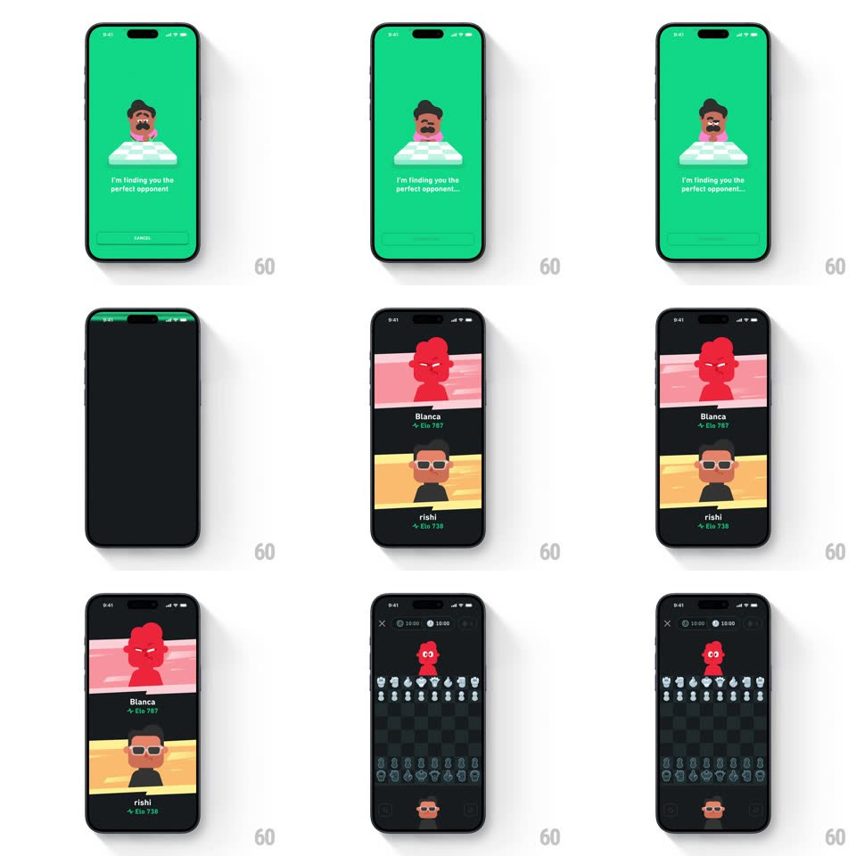

Media
Frame-by-frame

Rebuild this animation 1:1: Duolingo Chess matchmaking - tap Play a Person, the mascot idles while it searches, then the opponent and you slide in as player cards and the board deal plays out.

Rebuild this animation 1:1: Duolingo Chess matchmaking - tap Play a Person, the mascot idles while it searches, then the opponent and you slide in as player cards and the board deal plays out.
## Integration
Integration: stack-agnostic spec - springs given as stiffness/damping, timed motions as duration + curve; map every value to your framework and animation library of choice.
## Scene
Duolingo green lobby: the mustached mascot behind a chessboard, "Play Chess" with timed-match buttons ("Play a Person 10|0", "Play Oscar 10|0") and the bottom nav. Search state: the mascot alone with "I'm finding you the perfect opponent..." and Cancel. Match state: a dark screen with two player cards - opponent on top (red-lit portrait, name, Elo) and you below (name, Elo). Game state: the dark board with the opponent's avatar top-center, your avatar bottom-center, clocks at 10:00, and pieces in the starting array.
## Motion spec
Pattern: matchmaking flow - idle search, sliding versus cards, board deal-in.
- On tap, the lobby content slides down and out (250ms) and the search state rises in (300ms); the mascot idles with a bob (+/-6px, 2s loop) and a shifting gaze while the status text cycles an ellipsis.
- When matched, the green wipes to dark (200ms) and the two versus cards slide in from opposite edges: opponent from the top, you from the bottom (translateY +/-60 -> 0, spring ~320/18, 400ms), names and Elos fading in 120ms after each card lands.
- The cards hold 700ms, then part (opponent up, you down, 300ms) as the board fades in between them.
- Pieces deal onto the board rank by rank from the opponent's side toward you (each rank 60ms apart, pieces dropping 12px into place, 200ms) as the clocks fade to 10:00.
- The avatars dock to their board seats as the cards finish exiting - one continuous hand-off.
## Calibration
- The versus cards carry each player's color wash (red for the opponent, your theme below) - the tint does the antagonism, no VS badge needed.
- The search is cancellable until the cards land - Cancel collapses back to the lobby with the reverse slide.
## Reduced motion
Search fades to the cards (crossfade 250ms); pieces appear set without the deal.
## Don't miss
- The Elo rides under each name with its small chart glyph - the stakes are visible before move one.
- The board deal runs opponent-to-player - the game literally comes at you.